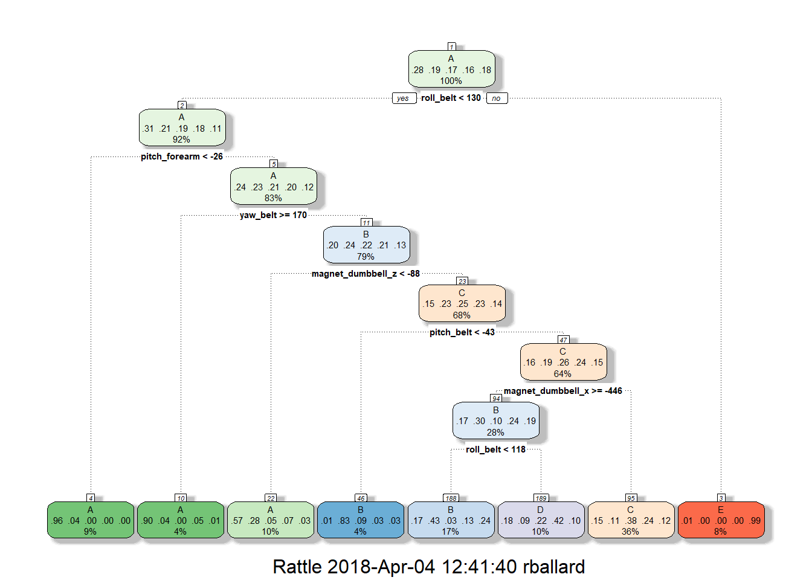

Using devices such as Jawbone Up, Nike FuelBand, and Fitbit it is now possible to collect a large amount of data about personal activity relatively inexpensively. These type of devices are part of the quantified self movement - a group of enthusiasts who take measurements about themselves regularly to improve their health, to find patterns in their behavior, or because they are tech geeks. One thing that people regularly do is quantify how much of a particular activity they do, but they rarely quantify how well they do it. In this project, your goal will be to use data from accelerometers on the belt, forearm, arm, and dumbell of 6 participants. They were asked to perform barbell lifts correctly and incorrectly in 5 different ways. More information is available from the website here: http://web.archive.org/web/20161224072740/http:/groupware.les.inf.puc-rio.br/har (see the section on the Weight Lifting Exercise Dataset).
The training data for this project are available here:
https://d396qusza40orc.cloudfront.net/predmachlearn/pml-training.csv
The test data are available here:
https://d396qusza40orc.cloudfront.net/predmachlearn/pml-testing.csv
setwd("C:/Users/rballard/Desktop/Personal/Data Science Certification/08 pml/courseproj_jan18")
#Instantiate set addresses
#trainloc <- "http://d396qusza40orc.cloudfront.net/predmachlearn/pml-training.csv"
#testloc <- "http://d396qusza40orc.cloudfront.net/predmachlearn/pml-testing.csv"
trainloc <-"pml-training.csv"
testloc <-"pml-testing.csv"
#Reads in training and testing datasets, keeps string valued fields
trainingData <- read.csv(file=paste(trainloc), header = TRUE, na.strings = c("NA", ""), stringsAsFactors=FALSE, row.names="X")
testingData <- read.csv(file=paste(testloc), header = TRUE, na.strings = c("NA", ""), stringsAsFactors=FALSE, row.names="X")In this section the loaded datasets are reviewed. We check for missing values. It appears some of the fields have many missing values. In the next step these will be removed from the datasets. (This code chunk is not evaluated in HTML knit due to unwieldy output)
names(trainingData)
head(trainingData,10)
str(trainingData)
table(trainingData$classe)
dim(trainingData)
dim(testingData)In this phase identifier, timestamp, and fields containing NAs are removed from the dataset.
#Keep only complete records in training and testing datasets
trainingData<-trainingData[colSums(is.na(trainingData))==0]
testingData<-testingData[colSums(is.na(testingData))==0]
trainingData$classe <-as.factor(trainingData$classe)
#The first 7 columns of the datasets are ID columns and not used in predicting classe, so are removed
ids<-seq(1:6)
idfields<-names(trainingData)[ids]
trainingData<-trainingData[,-which(names(trainingData) %in% idfields)]
testingData<-testingData[,-which(names(testingData) %in% idfields)]This step seperates the training set into training (70% of training data) and validation (30% of training data) for cross-validation purposes.
#Partitions Training set to Training/Validation sets for cross-validation
inTrain <-createDataPartition(y=trainingData$classe,p=.7,list=FALSE)
trainingSet<-trainingData[inTrain,]
validationSet<-trainingData[-inTrain,]
#Standardize naming conventions
testingSet<-testingDataHere we attempt to create a classificaiton model using recursive partitioning. The resulting confusion matrix indicates an accuracy of ~55%. The following section attempts to use the Random Forest method to increase accuracy.
#Detects number of cores and registers parallel backend
detectCores()## [1] 4getDoParWorkers()## [1] 1registerDoParallel(cores = 4)
#Sets cross validation
control <-trainControl(method = "cv", number = 5)
rpart_fit<-train(classe ~ .,
data = trainingSet,
method = "rpart",
trControl = control)
print(rpart_fit, digits = 4)## CART
##
## 13737 samples
## 52 predictor
## 5 classes: 'A', 'B', 'C', 'D', 'E'
##
## No pre-processing
## Resampling: Cross-Validated (5 fold)
## Summary of sample sizes: 10989, 10991, 10989, 10990, 10989
## Resampling results across tuning parameters:
##
## cp Accuracy Kappa
## 0.02604 0.5622 0.4450
## 0.04307 0.4861 0.3349
## 0.11626 0.3326 0.0737
##
## Accuracy was used to select the optimal model using the largest value.
## The final value used for the model was cp = 0.02604.rpart_predict <- predict(rpart_fit, validationSet)
rpartConMat<-confusionMatrix(validationSet$classe,rpart_predict)fancyRpartPlot(rpart_fit$finalModel)
With the Random Forest model multiple bootstrap decision trees are generated and majority voting is enacted to create a model more accurate classification model at the cost of possible overfitting and less interperability by the reader. With K=5 crossfold validation the accuracy of our random forest model is 99.25%.
rf_fit<-train(classe~.,data = trainingSet,method="rf",
trControl = control)
print(rf_fit, digits = 4)## Random Forest
##
## 13737 samples
## 52 predictor
## 5 classes: 'A', 'B', 'C', 'D', 'E'
##
## No pre-processing
## Resampling: Cross-Validated (5 fold)
## Summary of sample sizes: 10990, 10989, 10991, 10989, 10989
## Resampling results across tuning parameters:
##
## mtry Accuracy Kappa
## 2 0.9900 0.9874
## 27 0.9912 0.9889
## 52 0.9856 0.9818
##
## Accuracy was used to select the optimal model using the largest value.
## The final value used for the model was mtry = 27.rf_predict<-predict(rf_fit,validationSet)
valConMat <- confusionMatrix(rf_predict,validationSet$classe)
valConMat## Confusion Matrix and Statistics
##
## Reference
## Prediction A B C D E
## A 1672 7 0 0 0
## B 2 1131 8 0 0
## C 0 1 1015 19 2
## D 0 0 3 944 1
## E 0 0 0 1 1079
##
## Overall Statistics
##
## Accuracy : 0.9925
## 95% CI : (0.99, 0.9946)
## No Information Rate : 0.2845
## P-Value [Acc > NIR] : < 2.2e-16
##
## Kappa : 0.9905
## Mcnemar's Test P-Value : NA
##
## Statistics by Class:
##
## Class: A Class: B Class: C Class: D Class: E
## Sensitivity 0.9988 0.9930 0.9893 0.9793 0.9972
## Specificity 0.9983 0.9979 0.9955 0.9992 0.9998
## Pos Pred Value 0.9958 0.9912 0.9788 0.9958 0.9991
## Neg Pred Value 0.9995 0.9983 0.9977 0.9959 0.9994
## Prevalence 0.2845 0.1935 0.1743 0.1638 0.1839
## Detection Rate 0.2841 0.1922 0.1725 0.1604 0.1833
## Detection Prevalence 0.2853 0.1939 0.1762 0.1611 0.1835
## Balanced Accuracy 0.9986 0.9954 0.9924 0.9892 0.9985This is the random forest model classe prediction fit to the test set.
prediction<-predict(rf_fit,testingSet)
prediction## [1] B A B A A E D B A A B C B A E E A B B B
## Levels: A B C D E